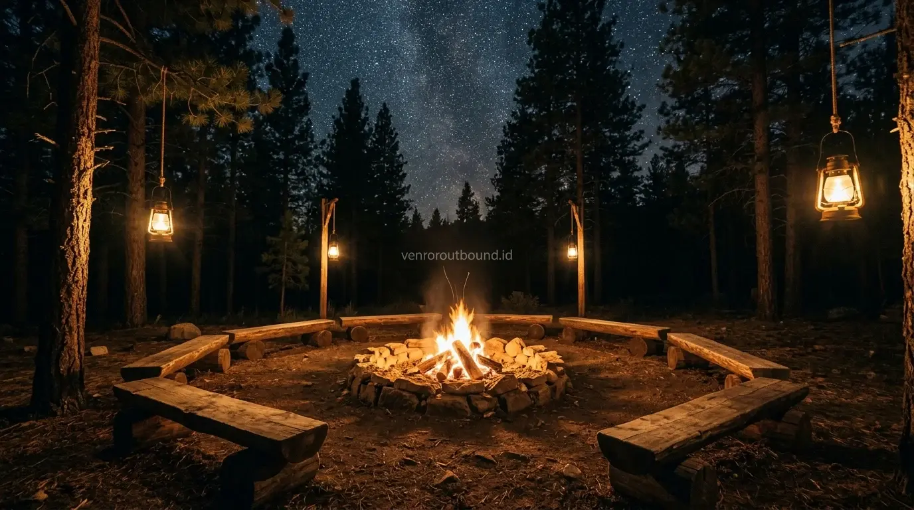

1. Prinsip Dasar Menyusun Jadwal Outbound Menginap Siswa
Jawaban singkat: Rundown outbound sekolah yang baik harus menyeimbangkan materi kedisiplinan dengan aktivitas rekreasi edukatif. Durasi 2 hari 1 malam dalam skema paket outbound sekolah sangat cocok dikombinasikan dengan kegiatan api unggun dan character building, memberikan ruang memadai bagi peserta didik untuk melatih kemandirian, kekompakan regu, serta evaluasi diri secara bertahap tanpa menimbulkan kelelahan fisik berlebihan.
Menyelenggarakan kegiatan luar sekolah dengan format menginap (2 Hari 1 Malam / 2D1N) selalu menghadirkan tantangan tersendiri bagi wakil kepala sekolah bidang kesiswaan dan para guru pendamping. Di satu sisi, panitia ingin memberikan pengalaman petualangan yang seru dan berkesan bagi para siswa. Di sisi lain, prioritas utama institusi pendidikan tetaplah keamanan, ketertiban, dan ketercapaian nilai-nilai karakter peserta didik.
Kunci sukses kegiatan menginap bertumpu pada penyusunan rundown yang terencana secara matang. Jadwal yang terlalu padat dapat membuat siswa kelelahan fisik sehingga mudah jatuh sakit atau kehilangan konsentrasi. Sebaliknya, jadwal yang terlalu longgar berisiko menimbulkan hilangnya kontrol pengawasan saat waktu luang. Oleh sebab itu, integrasi empat pilar utama—edukasi, rekreasi, character building, dan pengawasan ketat—harus tercermin di setiap blok waktu kegiatan.

Pentingnya Melatih Leadership Sejak Bangku Sekolah Menengah
Ulasan pembentukan jiwa kepemimpinan pelajar melalui media simulasi outdoor terarah.
2. Contoh Struktur Matriks Rundown Outbound Sekolah 2 Hari 1 Malam
Berikut adalah model acuan struktur alur kegiatan 2 hari 1 malam yang dirancang untuk mengoptimalkan energi peserta dan menjaga alur pendidikan tetap menyenangkan:
*Catatan: Tabel di atas merupakan contoh struktur alur konten edukatif, bukan jadwal operasional mutlak. Susunan waktu aktual dapat disesuaikan dengan kebutuhan kurikulum sekolah, ketersediaan fasilitas venue, dan kondisi cuaca lapangan.

Tata letak area api unggun dan peralatan refleksi karakter yang disiapkan dengan standar keamanan ketat.
3. Camping Ground Tenda vs Penginapan Villa: Menentukan Venue yang Tepat
Pemilihan tipe akomodasi sangat memengaruhi penyusunan rundown dan kesiapan fisik peserta:
- Konsep Camping Ground (Tenda Dome): Sangat direkomendasikan untuk pembinaan LDKS OSIS, pramuka penegak, atau jenjang SMA. Konsep ini menantang siswa belajar mendirikan perlengkapan, menjaga kerapian tenda bersama, dan melatih kemandirian tidur di alam terbuka.
- Konsep Villa / Resort Edukasi: Lebih sesuai untuk jenjang SD atau SMP awal. Memudahkan kontrol kebersihan, pengaturan kamar mandi yang memadai, serta meminimalkan risiko terpapar angin malam bagi anak-anak.

Paket Outbound Sekolah Karakter Edukatif & Terlengkap 2026
Panduan lengkap fasilitas all-in, rincian biaya, dan checklist proposal untuk komite sekolah.
4. Manajemen Pengawasan dan Rasio Guru Pendamping
Pengawasan peserta selama kegiatan menginap memerlukan pembagian tugas yang terstruktur antara pihak sekolah dan penyelenggara outbound. Beberapa langkah operasional yang perlu diperhatikan meliputi:
- Rasio Pendamping yang Proporsional: Rasio rujukan umum adalah 1 guru pendamping untuk setiap 20 siswa. Pada kegiatan alam terbuka dengan rintangan lebih dinamis, rasio pendampingan dapat diperketat demi memastikan setiap kelompok terawasi dengan baik.
- Sistem Presensi Regu Berlapis: Pelaksanaan presensi nama dilakukan di setiap titik transisi jadwal: saat tiba di lokasi, sebelum makan, sebelum sesi malam dimulai, saat jam malam (*curfew*), dan setelah bangun pagi.
- Kesiapsiagaan Pos Medis Lapangan: Memastikan adanya tenda/ruang P3K khusus yang dilengkapi obat-obatan pertolongan pertama, jalur evakuasi kendaraan yang siap bergerak, serta koordinasi awal dengan fasilitas kesehatan terdekat.

Outbound Pelajar vs Class Meeting: Mana yang Lebih Efektif Bangun Karakter?
Perbandingan komprehensif antara kegiatan pertandingan antarkelas dan outbound edukasi.
5. Mengunci Makna Melalui Sesi Debriefing Akhir
Kegiatan outbound 2D1N bukan sekadar rekreasi melepas penat dari rutinitas belajar. Momen paling berharga terdapat pada sesi *debriefing* di hari kedua. Di sesi ini, fasilitator mengajak siswa merefleksikan dinamika yang terjadi: bagaimana mereka mengatasi ego kelompok saat simulasi rintangan, pelajaran apa yang didapat dari malam kebersamaan, dan bagaimana nilai-nilai gotong royong tersebut akan diaplikasikan di sekolah.
Rancang Rundown Outbound Sekolah Anda Bersama Kami
Dapatkan draf rundown kustom untuk acara sekolah Anda di nomor +62 82211221909. Diskusikan alokasi waktu, pilihan lokasi camping/villa di Batu-Malang, dan modul karakter yang sesuai dengan kurikulum sekolah Anda.
Hubungi Kami via WhatsApp6. Kesimpulan
Penyusunan rundown outbound sekolah 2 hari 1 malam yang seimbang adalah fondasi terciptanya kegiatan kesiswaan yang sukses, aman, dan mendalam. Melalui perpaduan jadwal yang tertata antara simulasi team building, penguatan karakter, rekreasi hangat di sekitar api unggun, serta pengawasan guru yang solid, siswa akan membawa pulang pembelajaran hidup yang berharga untuk kehidupan sehari-hari.
Pertanyaan Sering Diajukan (FAQ)

Arby Ardiansyah
Arby Ardiansyah adalah praktisi pengembangan program dan penyusun konten edukasi luar ruang di Vendor Outbound, berfokus pada perancangan simulasi kepemimpinan, dinamika kelompok, dan penguatan karakter peserta didik di lingkungan pendidikan.